Open the Study Hub login, enter your approved UNE email, and this note will unlock automatically.
OMK 2 · Cardio · Week 17Cardiothoracic Surgery
Michael F. McGrath, MD FACS · Cardiothoracic Surgery · Maine Medical Center · 2026
Cardiothoracic Surgery
A cardiac surgeon's tour: working up the surgical patient, the heart-lung machine, CABG vs stents, valve disease and which prosthesis, then tumours, tamponade, LVADs, surgical AF ablation and type A dissection.
LecturerMichael F. McGrath, MD FACS
Sources81 slides + transcript
Topics10
Labeled figures56
Exam questions26
Videos28
Orientation
"Available, affable and able — in that order"
What a Cardiac Surgeon Fixes
Dr. McGrath is a Maine Med cardiac surgeon (UCLA, Georgetown, Cedars-Sinai general surgery, Pittsburgh cardiac surgery plus a congenital fellowship, and a Navy Medical Corps captain for 27 years). He taught from a partner's slide set, as a quick tour of adult cardiac surgery: how patients reach the surgeon, how they're worked up, and what gets done in the operating room.
How to read the coloursRed bold = lecturer emphasis / likely testedBlue bold = key factYellow = number to memoriseBoard add-on = AMBOSS / Robbins / board sources, not said in lecture
AbbreviationsCABG = coronary artery bypass grafting ("cabbage") · PCI = percutaneous coronary intervention (stent/balloon) · NSTEMI / STEMI = non-ST / ST-elevation myocardial infarction · MMC = Maine Medical Center · ACLS / BLS = advanced / basic life support
🫀
Acquired disease
Coronary artery disease
Aorta and great vessels (aneurysm, dissection)
Valves
Heart failure
Arrhythmia (some are treated surgically)
Cardiac tumours · trauma · endocarditis
👶
Congenital disease
Cyanotic ("blue") vs acyanotic ("pink") — it depends on the path the blood takes.
Not covered in this lecture; he offered a separate talk (with the pediatric cardiac surgeon) if the class wants one.
Risk factors for acquired disease: some can't be changed (male sex, family history); the rest you do to yourself — diabetes, smoking, hypertension and so on.
Three ways patients reach the surgeon
Mode
Story
Surgical role
Non-urgent
Symptoms mentioned to the primary care doctor (e.g. tightness walking uphill or on sand) → cardiac workup: ECG, stress test, echo, cath → cardiology
Surgical referral when medical and percutaneous treatments aren't enough
Urgent / emergency
Mild symptoms suddenly escalate: NSTEMI (enzymes up, ECG relatively normal), STEMI (enzymes up and acute ECG injury), type A aortic dissection
Surgery during the same admission; for type A dissection, emergency repair is the only treatment
Catastrophic
Cardiac arrest — "re-establish circulation of oxygenated blood NOW"
Occasionally emergency surgery
✅ The cardiac-arrest bundle on the slide
BLS: airway, breathing, circulation (CPR) · electrical cardioversion or defibrillation, depending on the rhythm.
Correct calcium, potassium, magnesium and pH (sodium bicarbonate).
Invasive monitoring (arterial line, Swan-Ganz), cooling protocols to protect the brain, and a cath lab team decision: PCI to the culprit now with CABG later, or straight to the OR.
Start here
🎬 Watch — optional reinforcement; nothing loads until you click
AbbreviationsHx = history · HPI = history of present illness · CP = chest pain · SOB = shortness of breath · ROS = review of systems · EMR = electronic medical record · NYHA = New York Heart Association · CCS = Canadian Cardiovascular Society · JVD = jugular venous distension · PMI = point of maximal impulse · RVH = right ventricular hypertrophy · TTE / TEE = transthoracic / transesophageal echo · PFTs = pulmonary function tests · ABG = arterial blood gas · FFR = fractional flow reserve · STS = Society of Thoracic Surgeons · EPO = erythropoietin · Hct = hematocrit
History: talk to the patient yourself
The surgeon is almost never the first to see the patient. Skim the records first for efficiency, then talk to the patient yourself.
"Trust, but verify": the EMR can be wrong, and once something is in Epic it's nearly impossible to remove. His example: a patient labelled with psoriatic arthritis who never had it.
Look at every image yourself, then read the report. Review all the labs.
Confirm the chief complaint (was it really chest pain, or shortness of breath?) and the HPI — you'll usually pick up a new detail or two.
Take a cardiovascular family history: MI, heart failure, valve disease, aneurysm or peripheral arterial disease, stroke, and how young.
Do a thorough ROS — it's a fast way to zero in on severity. That includes dental (endocarditis risk) and childhood illnesses (rheumatic fever).
⚠️ Why the data must be right
The surgeon decides for or against a major operation with real mortality and morbidity. A striking cath with severe disease isn't enough: if the patient is anemic, thrombocytopenic and acidotic, "you're probably not doing the right operation on the right day." If you operate on bad data and the patient dies, it's on you.
Slight limitation: rapid walking or stairs, after meals, cold, stress
III
Marked limitation; comfortable only at rest
Walking 1–2 blocks or one flight of stairs at a normal pace
IV
Symptoms at rest; any activity makes it worse
Any physical activity; may occur at rest
🕵️ The slide's four ROS vignettes — what's the surgical problem?
From slide 16, "how a good ROS helps." Answers use the lecture's own case logic.
0 / 0 correct
The physical exam — head to toe, in a gown
Repeat odd vital signs yourself. Undress the patient: you might find a deep pectus excavatum, an old chest scar or a radiation burn. (His story: a classmate did her first fundoscopic exam with the ophthalmoscope backwards — she's a radiologist now.)
Blood pressure in both arms (and legs if needed).
Every pulse: water-hammer (aortic insufficiency) · pulsus parvus et tardus (aortic stenosis) · irregularly irregular (AF) · absent · bruits or thrills.
Neck veins: flat vs distended (JVD); the waveform (e.g. tricuspid insufficiency).
Carotid Dopplers in those at risk: age >50, diabetics, left main disease
PFTs in heavy smokers
Baseline ABG — so you know what the lungs can do when weaning the ventilator
🔬
Invasive / advanced
Exercise or pharmacologic stress (ECG, nuclear, PET)
Cardiac MRI for viability: transmurally infarcted muscle won't recover, so it isn't bypassed
TEE (usually in the OR; best view of mitral disease)
Cardiac cath: left heart angiography, right-heart (Swan-Ganz) pressures, and FFR — a pressure wire tests whether a borderline lesion is significant
Pick from the menu to fit the patient. A 30-year-old woman with endocarditis rarely needs a coronary workup (a CT coronary angiogram can screen her). A 70-year-old lifelong smoker gets PFTs and the full panel.
Estimate risk and make a plan
Order what's missing; get clearances. Anemic but stable → automatic hematology consult (iron, EPO).
Jehovah's Witness patients refuse blood. He won't operate until their Hct is around 40 %, because bypass dilutes the blood and bleeding happens.
Calculate risk with the STS or EuroSCORE calculators.
Complex, high-risk patients go to a team review. Before turning a patient down, they get a second surgeon's opinion.
Q: The cath shows severe three-vessel disease. Before booking surgery, which data must the surgeon personally review, and why?
Answer
The images themselves (not just the report), the labs, the ECG and chest X-ray, and the history, confirmed with the patient. Anemia, thrombocytopenia or acidosis can make it "the wrong operation on the wrong day," and the EMR may be wrong.
Q: A patient is comfortable at rest but gets dyspnea walking across a room. NYHA class?
Answer
NYHA III — marked limitation, comfortable only at rest.
Q: Why get a cardiac MRI before bypass in a patient with an old anterior MI?
Answer
To assess viability. Transmurally infarcted (scarred) myocardium won't recover, so grafting the vessel to that territory won't help.
🎬 Watch — optional reinforcement; nothing loads until you click
AbbreviationsCPB = cardiopulmonary bypass · ECMO = extracorporeal membrane oxygenation · Fr = French (catheter size; 3 Fr = 1 mm) · RA = right atrium · LV = left ventricle · IVC / SVC = inferior / superior vena cava · K⁺ = potassium · LIMA = left internal mammary artery · LAD = left anterior descending artery · OPCAB = off-pump CABG
Before the machine: cross-circulation
In the 1950s, before bypass machines, C. Walton Lillehei in Minneapolis repaired babies' hearts using a parent as the pump: cannulas in the mother's or father's femoral artery and vein, piped to the baby on the next table. He calls it "the only operation with a potential 200 % mortality rate." Heart surgery didn't really advance until bypass technology was secured.
Extracorporeal circulation
Access
Central
Peripheral
Arterial (blood in)
Direct ascending-aorta cannula
Femoral or axillary artery
Venous (blood out)
Right atrial (large ~36 Fr cannula) or bicaval. Bicaval gives total bypass, so the RA and RV can be opened without an airlock.
RA venous cannula→venous reservoir→filter→oxygenator (CO₂ out, O₂ in)→pump + heater/cooler→arterial line → ascending aorta
Vents and suckers (LV vent, aortic-root vent) decompress the heart and clear air.
A separate pump delivers cardioplegia.
Run by a dedicated perfusionist; requires high-level anticoagulation (full heparin).
Blood contacting the tubing and oxygenator triggers a systemic inflammatory response. Modern materials reduce it, and modern systems are remarkably safe.
ECMO = the same technology taken to the ICU for catastrophic heart or lung failure.
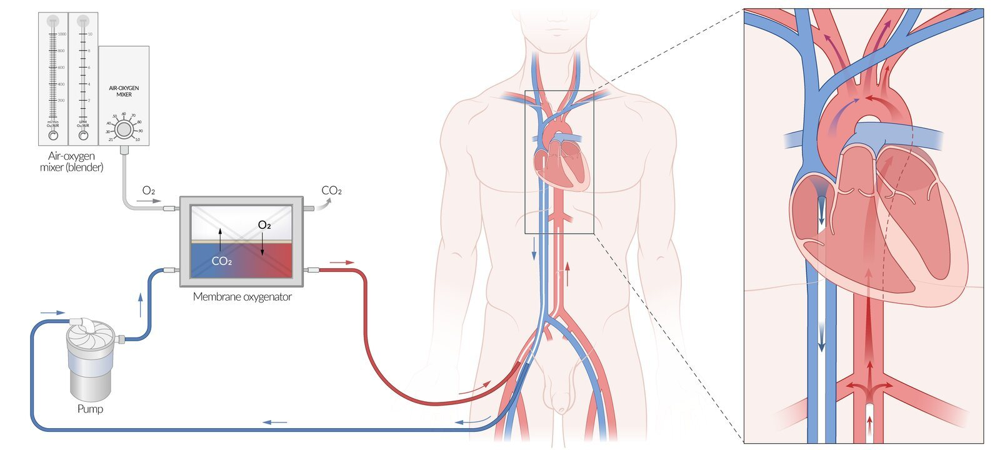
Fig S4VA-ECMO: the heart-lung machine taken to the ICU bedAMBOSS
🔑 Cardioplegia = a relaxed, cold, still heart
A high-K⁺, cold, blood-based solution stops the heart in diastolic arrest — relaxed, not contracted — so its oxygen use is minimal and the field is bloodless.
His routine: a ~1,200 mL induction dose, repeated about every 20 min.
Topical slush on the heart. Systemic cooling only for long cases.
The OR "time-out" includes the cardioplegia and cooling plan with the perfusionist.
Off-pump CABG (OPCAB)
Only for bypass grafting — you can't open a valve on a beating heart. The first LIMA-to-LAD was done off-pump by Kolessov (1964).
Needs a very experienced cardiac anesthesiologist to keep the patient stable.
Needs positioning devices ("starfish" apical suction) and focal stabilizers ("octopus"), plus an intraluminal shunt to keep the artery perfused while sewing.
Hard on small arteries, with a small but significant rate of graft failure. Data don't show it's as good as on-pump.
Reserved for patients unsafe for cardioplegic arrest (heavily calcified aorta, terrible lungs). <10 % of CABG.
Hybrid option: surgeon does LIMA → LAD (± diagonal); cardiology stents the rest.
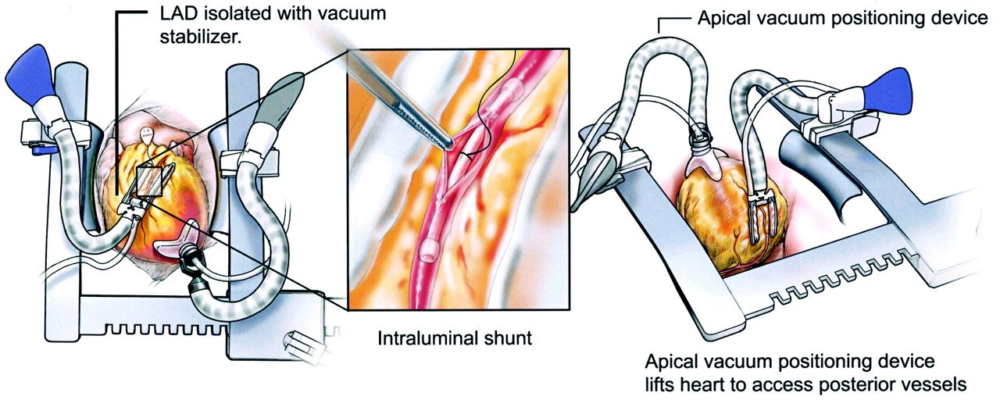
Fig S5Off-pump CABG: vacuum stabilizer isolates the LAD, intraluminal shunt, apical positioner lifts the heartMcGrath lecture · slide 28
Q: Why does cardioplegia stop the heart in diastole rather than systole, and what ion makes that happen?
Answer
A high-potassium solution depolarises the membrane, so myocytes can't fire and stay relaxed (diastolic arrest). A relaxed, cold heart uses far less oxygen than one arrested in contraction.
Q: Which operation can be done off pump, and which patients should get it?
Answer
Only CABG, reserved for patients not safe for cardioplegic arrest (e.g. a porcelain aorta, severe lung disease). It has slightly higher graft failure.
🎬 Watch — optional reinforcement; nothing loads until you click
Topic 3
⭐ MI complications + coronary anatomy
Slides 29–39 · the case · epidemiology · ischemia · MI complications · anatomy · diagnostics
A 75-year-old retired nurse (HTN, dyslipidemia, OSA) has diffuse chest pressure and jaw pain → NSTEMI by troponin. Echo: EF 35 %, anteroapical hypokinesis. Cath: severe proximal LAD disease, not safe to stent because of the risk of occluding the circumflex. Two days before urgent CABG she has recurrent pain on heparin with anterior ST changes. The cath lab places an intra-aortic balloon pump → emergency CABG ×1, LIMA to LAD.
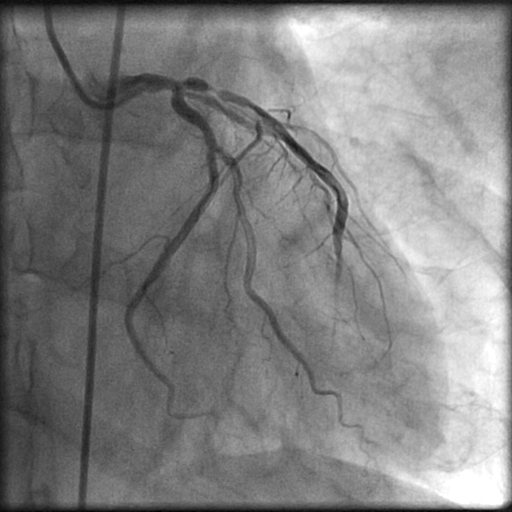
Fig S6Case angiogram: severe proximal LAD stenosis with slow filling of the distal LADMcGrath lecture · slide 31
Epidemiology
CAD is the single largest killer of Americans: ~500,000 deaths a year, 80 % in people over 65.
Rising in women, but still ~4× more prevalent in men. Women are protected until menopause, then catch up.
8 million ED chest-pain visits a year, but only 15–25 % are ACS. Still, assume chest pain is cardiac until proven otherwise (then consider esophageal spasm, pneumothorax, PE).
The Bernoulli equation predicts the pressure drop across a stenosis. Resistance and pressure drop rise exponentially as the narrowest area shrinks.
~75 % cross-sectional stenosis is the point where a lesion significantly limits flow.
His office explanation, with his hands: "at rest you get this much flow; walking up the hill you need more and can't get it → you stop. After bypass there's room to spare."
Ischemia = blood supply inadequate for demand. Its effects:
Diastolic dysfunction: a stiff LV won't relax to fill → blood backs into the lungs → dyspnea.
Decreased contractility: ischemic cardiomyopathy → can progress to cardiogenic shock.
Infarction / necrosis.
Complications of MI — rare now thanks to emergency PCI
Door-to-balloon < 90 min from ED arrival to balloon inflation restores flow fast, so these are uncommon — but they're surgical emergencies.
Timing
Complication
What happens
Acute
Free-wall rupture
LV ruptures → pericardial tamponade
Post-infarct VSD
Ischemic septum ruptures → a hole between LV and RV; patients are "very, very, very sick"
Fig S11Named branches: RCA (acute marginal, PDA, AV-nodal) and LCA (LAD with diagonals/septals, circumflex with marginals)AMBOSS
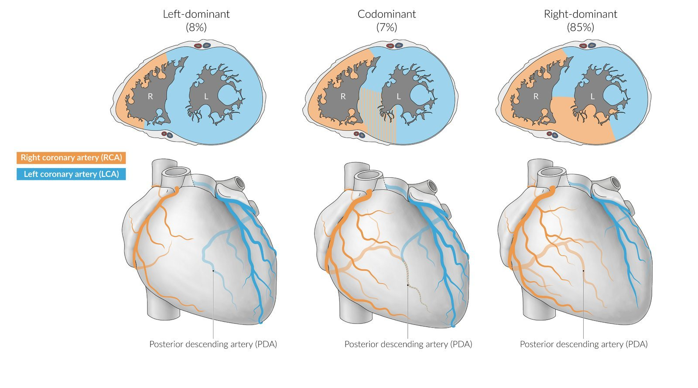
Fig S12Dominance = who gives the PDA: left-, co-, right-dominantAMBOSS
Diagnostics
ECG: ischemic repolarisation patterns; old infarcts (Q waves).
Stress testing to confirm physiologic significance: treadmill Bruce protocol (speed and incline step up), or pharmacologic stress for people who can't walk (vascular or joint disease) with ECG, echo, nuclear or PET imaging.
CT coronary angiography: still limited. He uses it to screen a young endocarditis patient who shouldn't have a cath.
Cardiac catheterization remains the gold standard (femoral or radial access, selective injection of contrast).
Q: Five days after an inferior MI, a patient suddenly develops pulmonary edema and hypotension with a new holosystolic apical murmur. Diagnosis and treatment?
Answer
Papillary muscle rupture → acute severe mitral regurgitation. Emergency surgery: on bypass, replace the mitral valve.
Q: What determines coronary dominance, and what's most common?
Answer
Which artery gives off the posterior descending artery. Most people are right-dominant.
Q: Roughly what degree of cross-sectional narrowing makes a coronary lesion flow-limiting?
Answer
~75 % of the cross-sectional area. Resistance rises exponentially as the lumen shrinks (Bernoulli).
🎬 Watch — optional reinforcement; nothing loads until you click
Topic 4
⭐ LIMA → LAD · diabetics with multivessel disease get CABG
Slides 40–48 · history · conduits · trials · medical therapy · stents · indications · outcomes
CABG vs PCI
AbbreviationsCABG = coronary artery bypass grafting · PCI = percutaneous coronary intervention · POBA = plain old balloon angioplasty · DES = drug-eluting stent · DAPT = dual antiplatelet therapy (aspirin + a P2Y12 blocker such as clopidogrel [Plavix]) · LIMA / IMA = (left) internal mammary artery (= internal thoracic) · GSV = great saphenous vein · LM = left main · 3VD = three-vessel disease · ACEi = ACE inhibitor · OMM = optimal medical management · STS = Society of Thoracic Surgeons
Fig S14Arterial (internal thoracic) and venous (saphenous) grafts in placeAMBOSS
Reroute blood past the obstruction using an arterial or venous conduit, on bypass with the heart arrested.
The single most important thing: the left internal mammary artery.
It branches from the subclavian and runs down the inside of the chest wall beside the sternum.
It's taken down with cautery, left attached at its origin, divided near the diaphragm after heparin, and sewn to the LAD almost every time.
Second arterial conduit: the left radial artery.
Venous conduit: great saphenous vein (the left leg, for logistics), now usually harvested endoscopically. It is reversed so its valves don't block flow, then sewn from the aorta to the coronary.
MMC does ~1,500 open hearts a year; two-thirds or more include CABG.
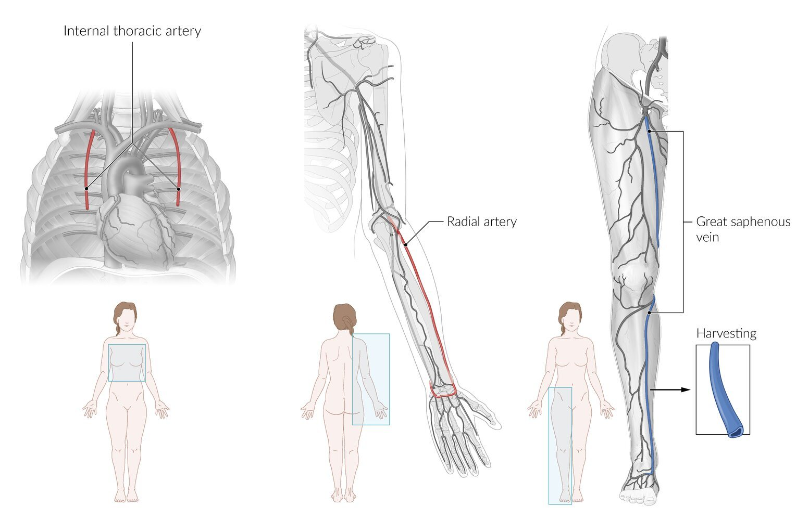
Fig S15Where conduits come from: internal thoracic artery, radial artery, great saphenous veinAMBOSS
"The most studied operation in the history of medicine"
Early randomised trials (1972–79) — VA Cooperative, European Coronary Surgery Study, CASS — compared CABG with medical therapy:
Clear benefit for severe left main and three-vessel disease.
One- or two-vessel disease benefited only if the proximal LAD was involved.
One- or two-vessel disease sparing the LAD: medical therapy equal or better.
Medical therapy treats symptoms, not the disease
Antiplatelet: aspirin (plus newer agents such as clopidogrel; factor Xa-inhibitor anticoagulants).
~2 % mortality; every extra major illness pushes it higher
Approaching 10–15 %
Near prohibitive
Back to cardiology for a safer plan. If nothing is safe: optimal medical management + palliative care referral
Q: A 62-year-old diabetic has severe three-vessel CAD with preserved EF. Stents or bypass?
Answer
CABG — superior for diabetics with multivessel disease (FREEDOM) and for 3-vessel/left main disease (SYNTAX).
Q: Which conduit gives the best long-term survival benefit, and where is it sewn?
Answer
The left internal mammary artery, left attached to the subclavian and sewn to the LAD.
Q: Why do patients with drug-eluting stents need dual antiplatelet therapy?
Answer
The drug stops tissue growing through the stent, but also stops it being covered by endothelium. The raw metal surface is thrombogenic → late stent thrombosis. Aspirin for life + clopidogrel for at least 1 year.
Q: Why is the saphenous vein reversed before grafting?
Answer
So its venous valves point with the flow (from aorta to coronary) and don't obstruct it.
🎬 Watch — optional reinforcement; nothing loads until you click
Topic 5
⭐ Mechanical = warfarin forever · tissue = wears out
AbbreviationsAV valves = atrioventricular valves (tricuspid, mitral) · RV / LV = right / left ventricle · CO = cardiac output · GAS = group A Streptococcus · NOAC / DOAC = non-vitamin-K / direct oral anticoagulant · INR = international normalized ratio · TAVR = transcatheter aortic valve replacement · ViV = valve-in-valve
Two pumps in series
Each side has a priming pump (atrium) and a main pump (ventricle).
"How much of the cardiac output goes out the pulmonary artery?" — 100 %. The pumps are in series, so the same volume passes through both sides.
AV valves (tricuspid, mitral) are complex: leaflets tethered by chordae to papillary muscles.
Semilunar valves (pulmonic, aortic) are simple check valves.
All valves grow from the fibrous skeleton. The aortic and mitral valves touch (fibrous continuity) — on X-ray, two replaced valves sit side by side. The tricuspid and pulmonic valves are widely separated.
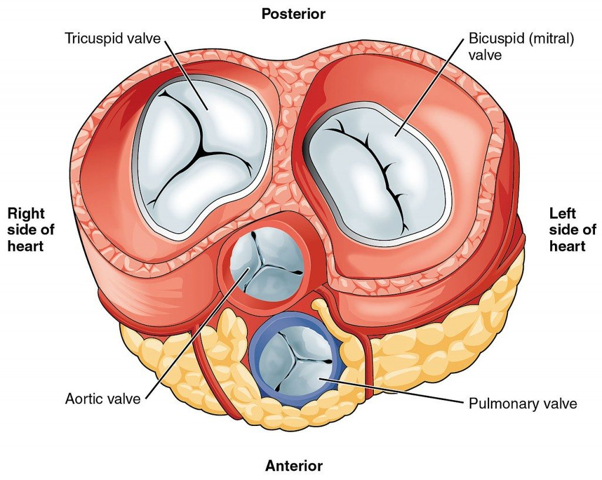
Fig S19The valve plane from above: aortic and mitral valves sit side by side (fibrous continuity); pulmonary valve anteriorMcGrath lecture · slide 51
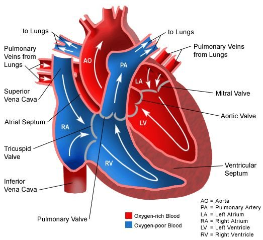
Fig S20Two pumps in series: RA → tricuspid → RV → pulmonary valve → lungs → LA → mitral → LV → aortic valveMcGrath lecture · slides 51 & 62
Pulmonary valve: rarely diseased in acquired disease except endocarditis; mostly congenital (e.g. adults with repaired tetralogy of Fallot).
Bicuspid aortic valve is the most common congenital valve problem in adults: 1–2 % of people. Normal = a 3-slice pizza (Mercedes logo); bicuspid = cut in half.
AV valves are complex enough that repair is far more often possible than with semilunar valves.
A 53-year-old software sales rep has had a murmur all his life (a known bicuspid valve). He chases his dog on the sand at Biddeford, gets chest tightness and passes out. Echo: severe AS, mean gradient 50, peak 95 mmHg; normal LV; clean coronaries; ascending aortic aneurysm 5.2 cm → AVR + ascending aorta replacement.
Aortic stenosis
The most common valve problem needing surgery. The valve opens and closes about 80 times a minute for a lifetime.
Calcific, degenerative AS presents in the 6th–7th decades. Bicuspid (1–2 % of people) presents in the 4th–6th, occasionally as late as the 7th–8th.
Micro-injury, scarring and calcification → thick, fused, immobile leaflets.
The LV compensates with concentric hypertrophy, holding perfusion pressure until it can't.
The disease is progressive ("almost a log curve"): slow at first, then rapid.
Fig S30Aortic stenosis at a glance: triad of syncope, angina, dyspnea; SAVR vs TAVRAMBOSS
⚠️ Recording slip: pulses
Early on, the recording calls the AS pulse "water hammer," and later he corrects himself. AS = pulsus parvus et tardus (slow rise, low, narrow pulse pressure). Water-hammer = aortic insufficiency (sharp rise and collapse, wide pulse pressure).
Treatment: SAVR vs TAVR
🔪
SAVR — open
Low- and intermediate-risk, younger patients; mechanical or tissue valve.
Sternotomy, bypass, cardioplegic arrest, cut out the calcified valve, sew in a new one.
Low-risk mortality <1 %.
Conduction injury in 3–4 % → permanent pacemaker.
A sewn-in valve can narrow a coronary ostium (especially the RCA) → bypass.
Back to normal life in 4–6 weeks.
🎈
TAVR — catheter
Originally intermediate- to high-risk elderly (70s–90s); now extending to low risk.
Transfemoral: wire across the valve → balloon-mounted stented tissue valve inflated during rapid ventricular pacing, pushing the native leaflets aside.
Mortality ~2.5 % even in high-risk patients; trace-to-mild paravalvular leaks are tolerated.
Mick Jagger was back on tour ~2 weeks after his.
⚠️ TAVR durability — the sources conflict
Slide 58 lists "50 % structural degeneration at 8 years."
Slide 59 and the spoken lecture say current-generation TAVR valves track like surgical valves, with data out to ~9 years. The unknown is what happens after year 10.
The 50 % figure most likely describes early-generation valves.
Fig S31PV loop in aortic stenosis (Week 14 link): very tall loop, ↓SVAMBOSS
Aortic insufficiency
Causes: the leaflets fail to meet (coapt) because of:
Aortic root aneurysm (Marfan) — the sinuses stretch and pull the leaflets apart.
Myxomatous (floppy) degeneration.
Endocarditis destroying a leaflet.
Rheumatic "fish-mouth" valve.
Aortic dissection unzipping the commissures.
Pathology: LV volume overload → dilation → eventually irreversible systolic failure. Compensation can last decades; some patients present with EF of 10–20 %.
Exam: water-hammer pulse (wide pulse pressure; no dicrotic notch — the notch marks aortic valve closure) and a diastolic murmur.
Board add-on The slide calls the AI murmur "crescendo-decrescendo diastolic… left lateral chest and axilla." The board version is an early diastolic, decrescendo, blowing murmur at the left sternal border, loudest sitting up and leaning forward in expiration.
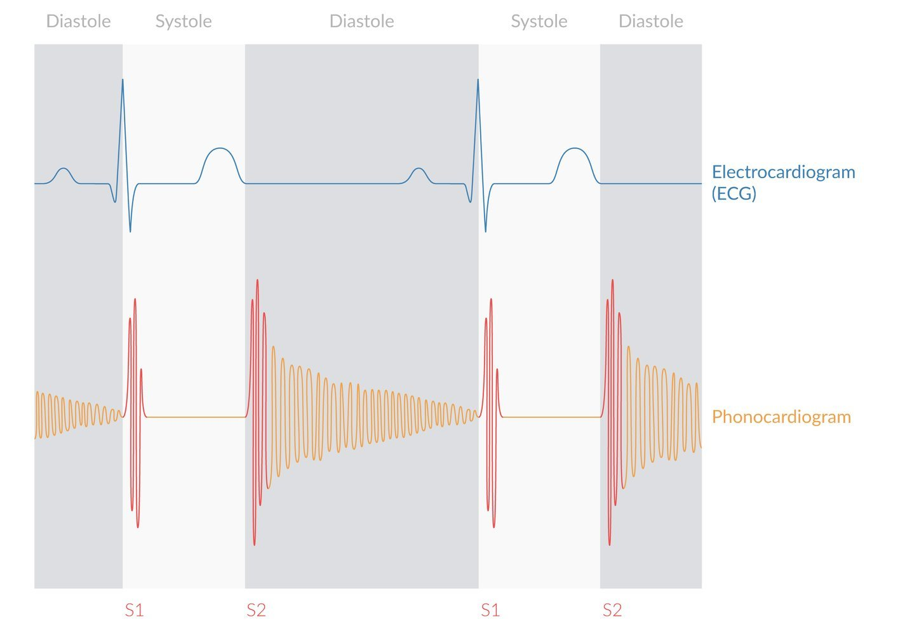
Fig S32Aortic insufficiency: early diastolic decrescendo murmurAMBOSS
Fig S33PV loop in aortic regurgitation: huge EDV, no isovolumic relaxationAMBOSS
Indications for surgery in AI (slide 61)
Severe AI · moderate AI with signs of decompensation · EF <50 % · severe LV dilation: end-systolic dimension >55 mm or end-diastolic >75 mm — "remember the sarcomere: overstretch kills"
Treatment remains surgical AVR.
TAVR is contraindicated in pure AI: a TAVR valve anchors on a calcified annulus, and pure AI usually has too little calcium, so the valve would migrate.
🎬 Watch — optional reinforcement; nothing loads until you click
Topic 7
⭐ Organic MR → repair · functional MR → replace
Slides 63–70 · two mitral cases · MR · MS · tricuspid endocarditis
Mitral & Tricuspid Disease
AbbreviationsMR / MS = mitral regurgitation (insufficiency) / stenosis · MVP = mitral valve prolapse · P2 = middle scallop of the posterior mitral leaflet · MVR = mitral valve replacement · LA = left atrium · AF = atrial fibrillation · PND = paroxysmal nocturnal dyspnea · TR = tricuspid regurgitation · IVDU = intravenous drug use · RV = right ventricle
Case 1 — slide 63
A 54-year-old man, told years ago he had a "click" (MVP) with no MR. Now 2–3 weeks of worsening exertional dyspnea and a new MR murmur. Echo: acutely torn chord to the P2 segment of the posterior leaflet; clean cath → mitral valve repair.
Case 2 — slide 64
A 38-year-old Somali woman with childhood rheumatic fever. At 24: severe MR + moderate MS → tissue MVR to avoid warfarin in her childbearing years. Now fever 2 weeks after dental work without antibiotics → prosthetic valve endocarditis. She can't reliably take warfarin → redo MVR with a bioprosthesis.
Mitral insufficiency
Degenerative: redundant, myxomatous leaflets; stretched or ruptured chordae.
Ischemic: infarcted papillary muscle.
Endocarditis destroying valve parts.
Functional: the valve itself is normal, but a dilated annulus/LV and chordae tethered toward the apex stop the leaflets meeting.
MVP usually does not cause significant MR or need surgery.
Pathophysiology: LA volume overload → LA dilation → AF (stretched conduction pathways) → pulmonary hypertension → right heart failure.
Diagnosis: holosystolic murmur radiating to the axilla. Echo shows the jet, and 3-D TEE shows the exact mechanism; look for secondary TR.
Fig S38PV loop in mitral regurgitation: no true isovolumic phasesAMBOSS
🔑 Repair or replace?
Organic (degenerative) MR → repair. Outcomes are better than replacement, because it keeps the valve and its chordae–papillary apparatus helping the LV. He repairs >95 % of repairable valves.
Functional MR → replace. The LV keeps remodelling, so repairs fail at 1–3 years.
Mitral stenosis
Mostly rheumatic: fused commissures and leaflets, thick short chordae. Occasionally a too-tight earlier repair.
Severe when valve area is 1–1.5 cm² (slide 67).
Presentation: dyspnea, orthopnea, PND (LA overload → hydrostatic pulmonary edema); pulmonary hypertension → RV failure and leg edema; AF.
Auscultation: opening snap, diastolic rumble at the apex, loud S1.
Studies: chest X-ray with massive cardiomegaly and interstitial edema; echo showing a tiny valve area; cath with high right and left filling pressures.
Treatment:
Percutaneous balloon valvuloplasty — temporizes, "buys time to tune the patient up."
Commissurotomy, or MVR.
Avoid warfarin in women of childbearing age (tissue valve). A later redo can switch to a durable mechanical valve.
A 34-year-old woman: 6 weeks of fever and malaise, severe leg edema, pulsatile neck veins, recent IV heroin. Echo: tricuspid endocarditis; gram-positive cocci; CT: septic pulmonary emboli. The vegetation didn't clear on antibiotics → radical tricuspid repair + 6 weeks of IV antibiotics. She relapsed → aortic valve endocarditis (6 more weeks). Relapsed again → new gram-negative infection → valve replacement with a bioprosthesis.
⚠️ Slide wording slip
Slide 69 ends "new infection of her tricuspid valve … requiring mitral valve replacement." The recording just says she "wound up with a valve replacement." Read it as tricuspid replacement.
Stenosis: usually rheumatic.
Insufficiency: IVDU endocarditis (common in Maine because of the drug epidemic); functional (dilated RV and annulus); carcinoid syndrome.
Diagnosis: echo + right heart cath.
Treatment: always try repair first. Tricuspid tissue is weaker than mitral tissue, so repair is harder.
If you must replace, tissue valves do better than mechanical in the tricuspid position, but eventually need replacing.
Reinfection after repair is the recurring story in IV drug users.
Fig S42Infective endocarditis of the aortic valve — friable vegetations on the cuspsRobbins & Cotran Atlas
Q: Opening snap, low diastolic rumble at the apex, loud S1, AF and hemoptysis in a woman from a developing country. Lesion and cause?
Answer
Mitral stenosis, almost always rheumatic.
Q: A patient with ischemic cardiomyopathy has severe functional MR with a normal-looking valve. Repair or replace?
Answer
Replace. The LV keeps remodelling, so repairs of functional MR have a high failure rate at 1–3 years. Organic MR (e.g. a torn P2 chord) is the one to repair.
Q: An IV drug user has a tricuspid vegetation, fever and multiple cavitating lung nodules. Explain the nodules and the first surgical goal.
Answer
Septic pulmonary emboli from right-sided endocarditis. If surgery is needed, try to repair the tricuspid valve first.
🎬 Watch — optional reinforcement; nothing loads until you click
Topic 8
⭐ Myxoma = left atrium · tamponade = pulsus paradoxus
Slides 71–74 · left atrial myxoma · other cardiac tumours · pericardial tamponade and the window
Myxoma & the Pericardium
AbbreviationsTIA = transient ischemic attack · TTE = transthoracic echo · RA / LA = right / left atrium · RCC = renal cell carcinoma · IVC = inferior vena cava · ESRD = end-stage renal disease · JVD = jugular venous distension · RV = right ventricle
Case — slide 71
A 68-year-old woman with dyspnea and a TIA (head CT negative). TTE: a 3 cm left atrial myxoma; no coronary disease. The myxoma and its attachment at the fossa ovalis were resected through the right atrium, and the septum patched with pericardium.
Fig S43Left atrial myxoma on a stalk — can fall into the mitral valve and block inflowMcGrath lecture · slide 71
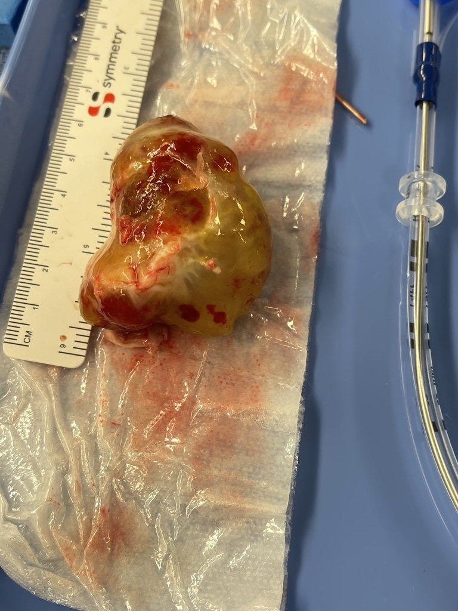
Fig S44Resected left atrial myxoma from the lecturer's practice — gelatinous and largeMcGrath lecture · slide 73
Myxoma is the most common cardiac tumour, usually in the left atrium, on a stalk (pedunculated), soft and gelatinous. Benign — a tumour, not a cancer.
It can fall into the mitral valve intermittently → dyspnea and presyncope ("ball-valve" obstruction), or embolise (the TIA).
It doesn't recur if you resect the whole stalk plus a piece of atrial septum.
Papillary fibroelastoma: attached to the mitral chordae.
Primary malignant cardiac tumours are rare. Surgeons may help urology or vascular surgery remove a renal cell carcinoma extending up the IVC toward the RA.
Metastases appear in ~10 % of autopsies. They usually present through the pericardium: bloody effusion → tamponade.
Fig S46Myxoma histology: stellate cells in a loose myxoid stromaAMBOSS
Case — slide 74
A 48-year-old woman on hemodialysis for ESRD has weeks of progressive dyspnea, severe JVD and edema, can't lie flat, is tachycardic with distant heart tones, narrow pulse pressure and a 20 mmHg inspiratory BP drop (pulsus paradoxus). Echo: large effusion with RA/RV compression → tamponade. Treated with a subxiphoid pericardial window; cultures and pathology negative.
Fig S48Hemopericardium distending the pericardial sacRobbins & Cotran Atlas
Cardiology can drain it with an echo-guided needle (pericardiocentesis).
Surgeons do a subxiphoid pericardial window at the base of the sternum: open the diaphragmatic pericardium and remove a quarter-sized piece for pathology. It usually doesn't come back.
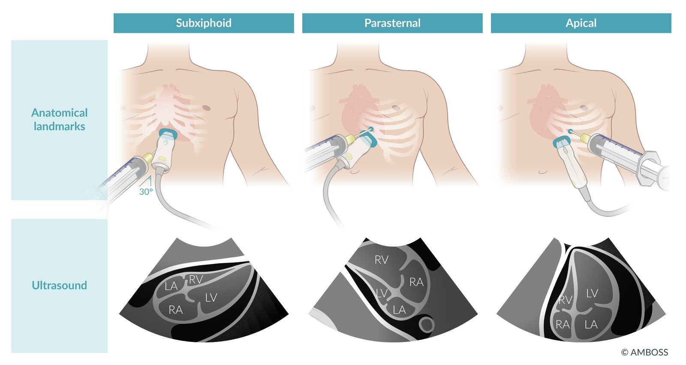
Fig S49Needle drainage options (subxiphoid, parasternal, apical) — the alternative to a surgical windowAMBOSS
Board add-onBeck triad = hypotension, JVD, muffled heart sounds; plus pulsus paradoxus (>10 mmHg inspiratory systolic drop) and electrical alternans on the ECG. Uremia is a classic cause of pericarditis/effusion.
Q: A woman has episodic dyspnea and near-fainting that changes with position, plus a TIA. Echo shows a mobile mass on a stalk attached to the fossa ovalis. Diagnosis and how to prevent recurrence?
Answer
Left atrial myxoma intermittently blocking the mitral valve and embolising. Resect the whole stalk plus a cuff of atrial septum (patch repair).
Q: A dialysis patient has JVD, distant heart sounds, hypotension and a 20 mmHg inspiratory drop in systolic pressure. Diagnosis and the surgical option?
Answer
Pericardial tamponade (uremic effusion). Drain it: needle pericardiocentesis, or a subxiphoid pericardial window.
🎬 Watch — optional reinforcement; nothing loads until you click
Topic 9
Slides 75–80 · LVAD as bridge or destination · surgical ablation of atrial fibrillation
LVADs & Surgical AF Ablation
AbbreviationsLVAD = left ventricular assist device · EF = ejection fraction · NYHA = New York Heart Association class · PCI = percutaneous coronary intervention · AF = atrial fibrillation · PVI = pulmonary vein isolation (catheter ablation) · EP = electrophysiology · LA = left atrium
Case — slide 75
A 62-year-old survives a severe anterior and lateral MI treated with emergency PCI, but his EF stays at 15 % with disabling NYHA III–IV symptoms. No valve disease, no remaining treatable CAD → LVAD as a bridge to transplantation.
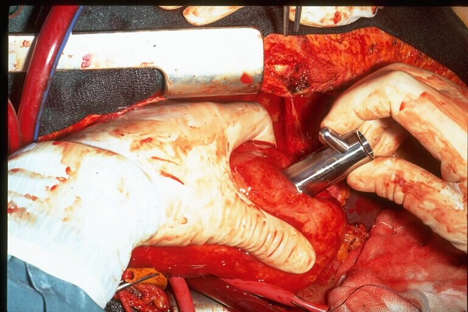
Fig S50LVAD implant ①: coring the LV apex for the inflow cannulaMcGrath lecture · slide 76
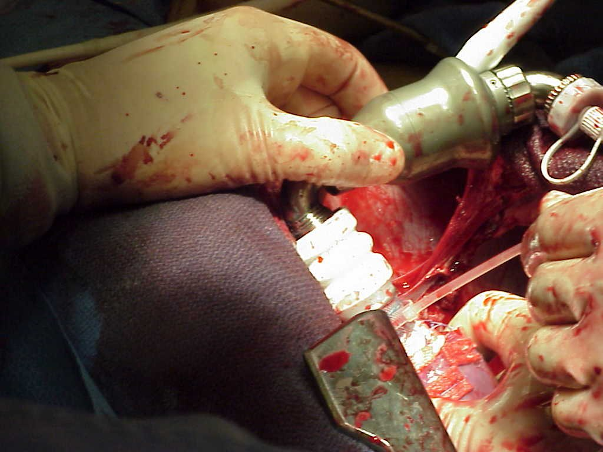
Fig S51LVAD implant ②: seating the pump in the apical sewing ringMcGrath lecture · slide 77
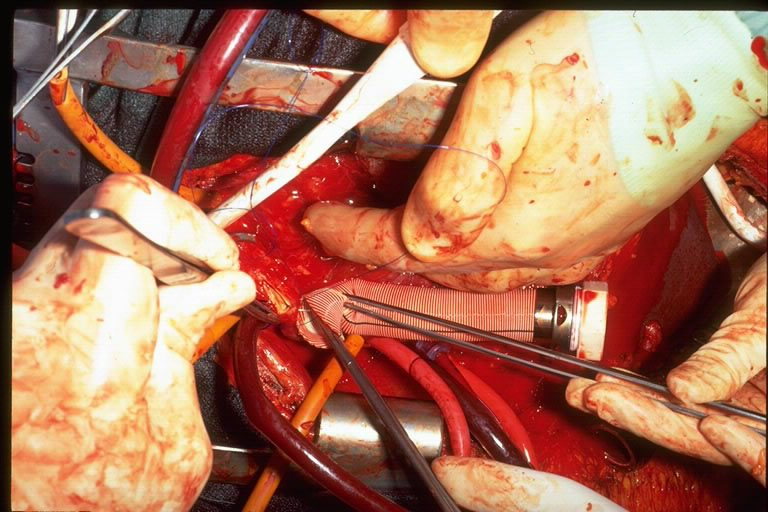
Fig S52LVAD implant ③: sewing the outflow graft to the ascending aortaMcGrath lecture · slide 78
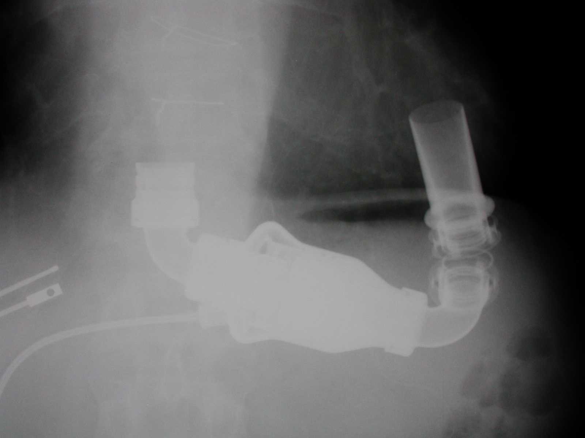
Fig S53LVAD on chest X-ray: pump at the apex, outflow graft curving up to the aortaMcGrath lecture · slide 79
A sewing ring on the LV apex holds the inflow. The pump sits in the chest, and an outflow graft is sewn to the ascending aorta.
Bridge to transplant: a younger, otherwise-good candidate waiting for a heart.
Destination therapy: lifelong support when transplant is contraindicated. Patients live 5–8+ years on a pump.
MMC doesn't transplant hearts but does implant LVADs. He previously ran a transplant program and implanted about two dozen total artificial hearts.
Case — slide 80
A 55-year-old with 6 years of AF. A pulmonary vein isolation failed at 14 months; he's now in persistent AF with fatigue despite several drugs and cardioversions → convergent procedure.
Concomitant surgical ablation: add AF ablation lesions while the chest is already open for a valve or CABG.
Convergent (hybrid) procedure:
Surgeon: a small approach through the pericardium to burn a lesion set on the back of the LA (epicardium).
EP cardiologist: completes the pattern from the inside (endocardium).
"A tremendous success rate."
Board add-on Links back to Week 14: persistent AF has a remodelled atrial substrate, so catheter pulmonary-vein isolation alone often fails. Hybrid approaches add posterior-wall lesions.
Q: A 70-year-old with EF 15 % and NYHA IV symptoms is not a transplant candidate. What surgical option exists?
Answer
LVAD as destination therapy (lifelong support; years on the pump are possible).
🎬 Watch — optional reinforcement; nothing loads until you click
Topic 10
⭐ Type A = ascending = emergency surgery
Slides 8, 81 · Stanford classification · a stroke that wasn't · hypothermic circulatory arrest
Type A Aortic Dissection
AbbreviationsCTA = CT angiography · ICA = internal carotid artery · MMC = Maine Medical Center · OR = operating room · ACP = antegrade cerebral perfusion · DHCA = deep hypothermic circulatory arrest · TEVAR = thoracic endovascular aortic repair
🚨
Stanford A
Involves the ascending aorta ± arch → emergency surgery, whatever the hour
💊
Stanford B
Everything beyond the left subclavian → often medical management
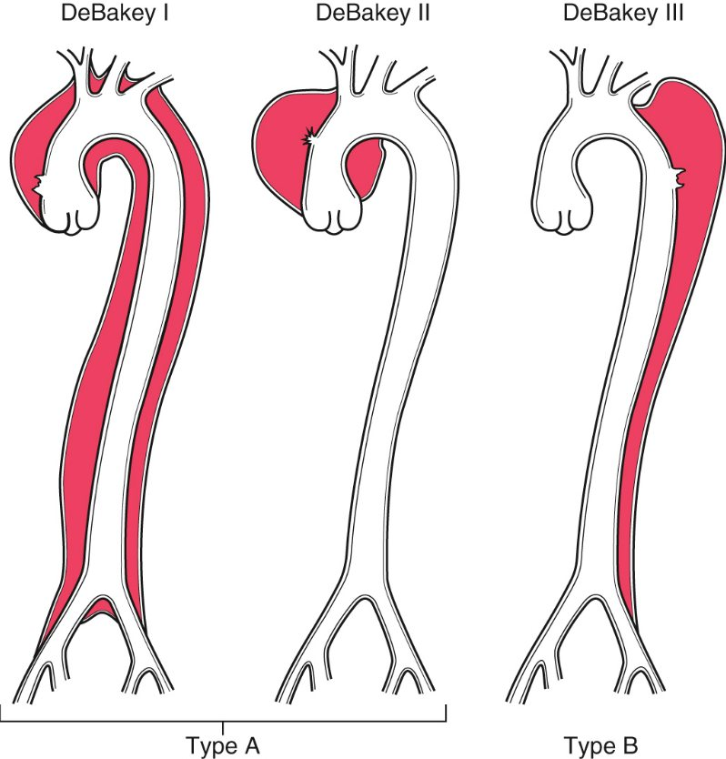
Fig S54DeBakey I–III vs Stanford A (any ascending involvement) / B (descending only)Gardner lecture (Week 13) · slide 29 of vascular deck · Radiopaedia
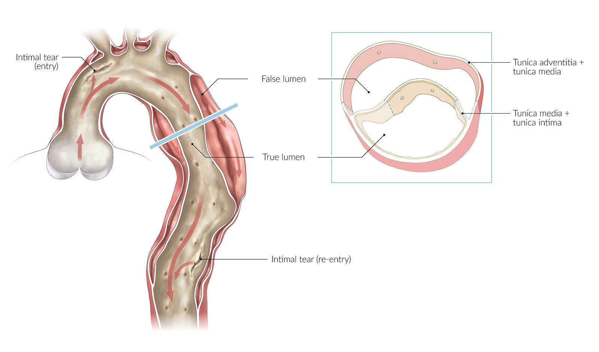
Fig S55Aortic dissection: intimal tear → blood splits the media into a false lumenAMBOSS
Case — slide 81
A 48-year-old security guard collapses on the phone at work. He's groggy and not moving his right side. The stroke workup (head and neck CTA) shows a type A dissection occluding the left internal carotid. At MMC: writhing in pain, no right femoral pulse, venous congestion and cyanosis of the head and upper chest, BP 100/70, sinus rhythm. CTA chest/abdomen/pelvis: dissection of the ascending aorta, arch and descending aorta → straight from CT to the OR for repair with selective antegrade cerebral perfusion and deep hypothermic circulatory arrest.
A tear in the intima lets blood peel the layers apart → a false lumen.
The false lumen can compromise the head vessels (stroke), the coronaries, the aortic valve (acute AI) and limbs (pulse deficits).
Patients often arrive as a "stroke" workup, and the dissection is found on the CTA.
Repair: cool the body (he goes to ~25 °C), stop the pump, open the aorta, and redirect blood into the true lumen. Selective antegrade cerebral perfusion protects the brain.
A big operation: patients usually do well but spend ~2 weeks in hospital.
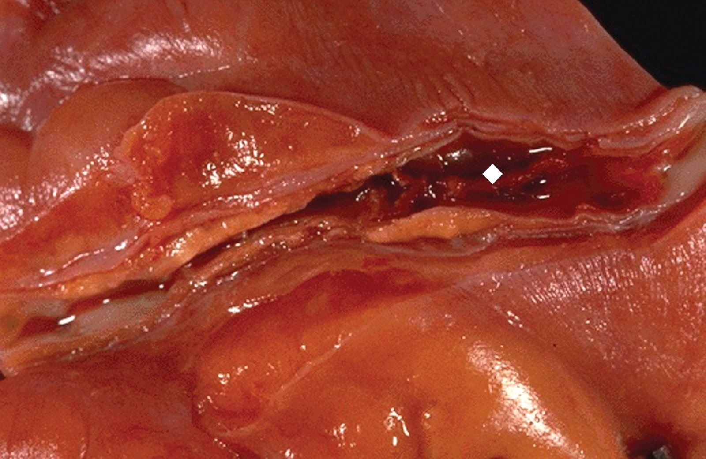
Fig S56Gross dissection: intimal tear opening into the false lumen (diamond)Robbins & Cotran Atlas
Board add-on Medical therapy for type B: impulse control — IV β-blocker first (↓HR and dP/dt), then vasodilator, targeting SBP ~100–120. Complicated type B (malperfusion, rupture) → TEVAR. Classic risk factors: hypertension, Marfan and other connective-tissue disease, bicuspid valve, cocaine, pregnancy.
Q: CTA shows a dissection flap starting in the ascending aorta and ending in the arch. Classification and management?
Answer
Stanford type A → emergency surgical repair (hypothermic circulatory arrest with cerebral perfusion).
Q: Why might an aortic dissection first present as a stroke?
Answer
The dissection extends into the arch and head vessels (e.g. occluding the carotid), and the false lumen starves the brain of flow.
🎯 Final drill: which operation or next step?
Every case from the lecture, plus a few twists. Shuffled.
0 / 0 correct
🎬 Watch — optional reinforcement; nothing loads until you click
Reference
Every short form used in these notes
Glossary & Abbreviations
ACP · DHCA
Antegrade cerebral perfusion · deep hypothermic circulatory arrest